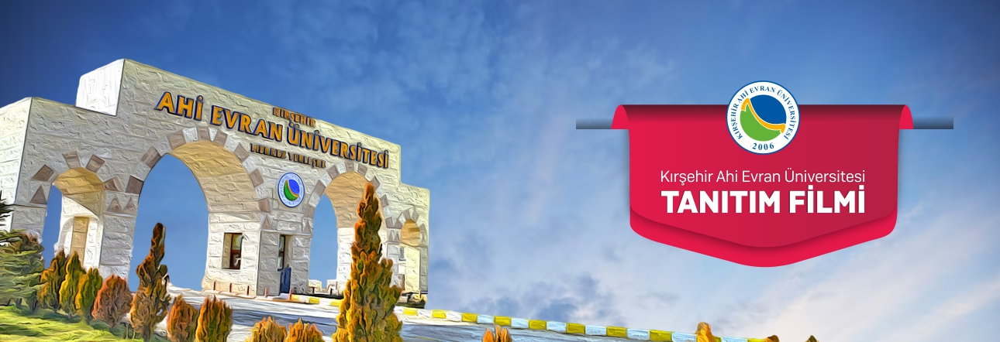

Hamilik
Tecrübe, rehberlik ve koruyucu yol arkadaşlığı.
Ahi Evran Üniversitesi iş birliğiyle; kimlik, duruş, meslek bilinci ve değer merkezli bir gelişim yolculuğu.


Hamilik Okulu Vakfı ve Kırşehir Ahi Evran Üniversitesi ortaklığında yürütülen program; üniversite öğrencilerinin kişisel, manevi, mesleki ve toplumsal farkındalıklarını geliştirmeyi hedefler.
Üniversite öğrencilerinin kendini tanımasını, mesleki bilinç kazanmasını, manevi ve ahlaki derinlik geliştirmesini, iletişim becerilerini güçlendirmesini ve tarihsel-toplumsal farkındalık edinmesini amaçlayan kapsamlı bir gelişim programıdır.
Programı Detaylı İncele →Program; mesleki bilinç, anlam arayışı, tarihsel farkındalık, estetik, dijital bilinç, duruş-değerler ve kapanış-etki takibi ekseninde tasarlanmış 8 başlıktan oluşur.
Tanışmadan etki takibine; programın dönemler boyunca nasıl aktığını izleyin.
Grup oluşumu, Ahilik ekseninde meslek bilinci.
Fıtrat, yaratılış ve kendini anlama atölyeleri.
Saha deneyimi, tarihsel ve estetik gözlem.
Tarihsel bilinç ve inanç estetiği.
Dijital bilinç ve karakter inşası.
Mezuniyet, geri bildirim ve uzun vadeli takip.
Kırşehir Hamilik Okulu'na katılmak için başvuru formunu doldurabilir, program detaylarını inceleyerek sürecin sana uygun olup olmadığını değerlendirebilirsin.
Program, Hamilik Okulu’nun değer merkezli eğitim yaklaşımı ile Kırşehir Ahi Evran Üniversitesi’nin akademik zemini arasında kurulan ortak bir gelişim alanıdır.
Ahilik ve meslek ahlakı mirasını gençlere taşıyan değer merkezli eğitim yaklaşımı.
Resmi siteKırşehir’de akademik üretim, öğrencilik deneyimi ve Ahilik kültürüyle güçlü bağ.
Resmi site